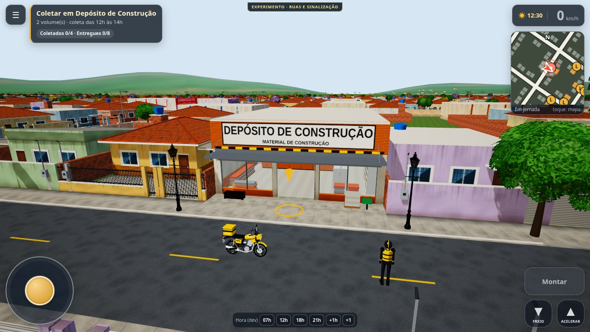
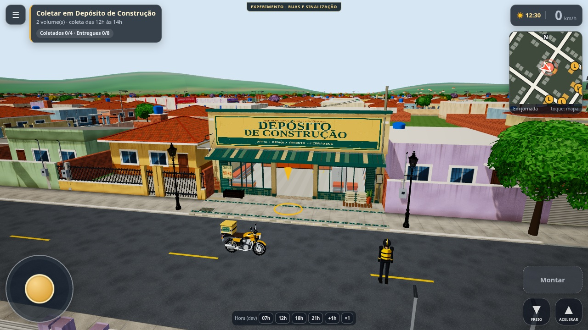
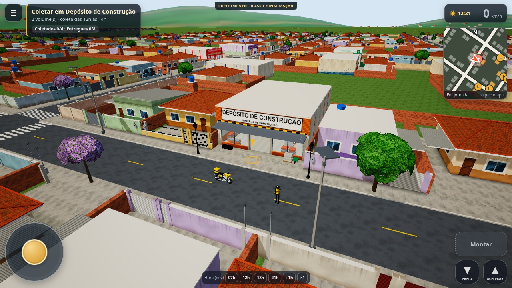
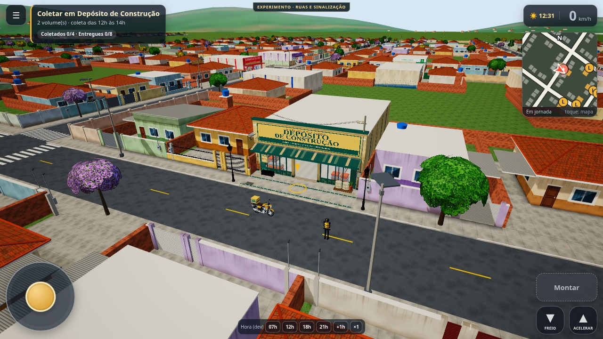
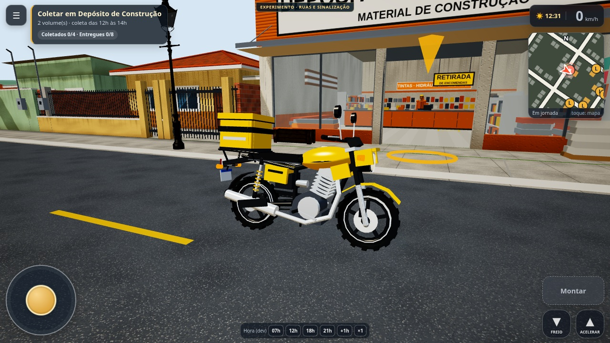
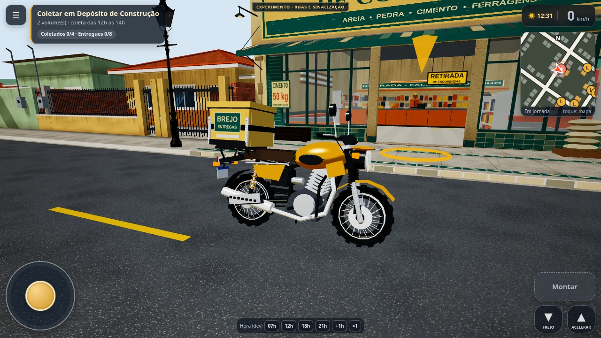
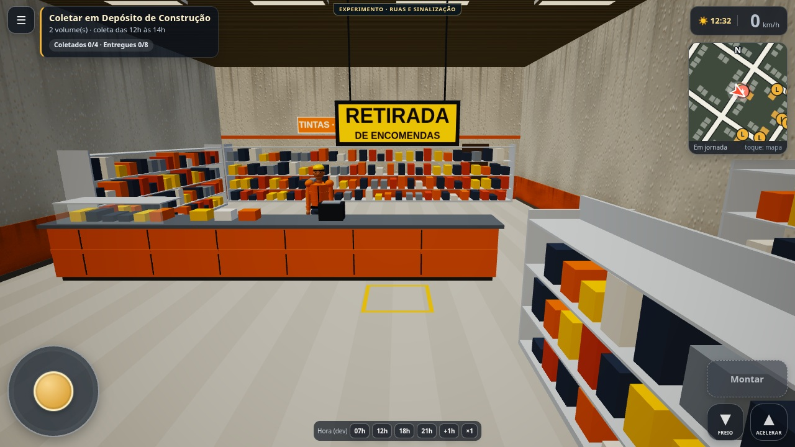
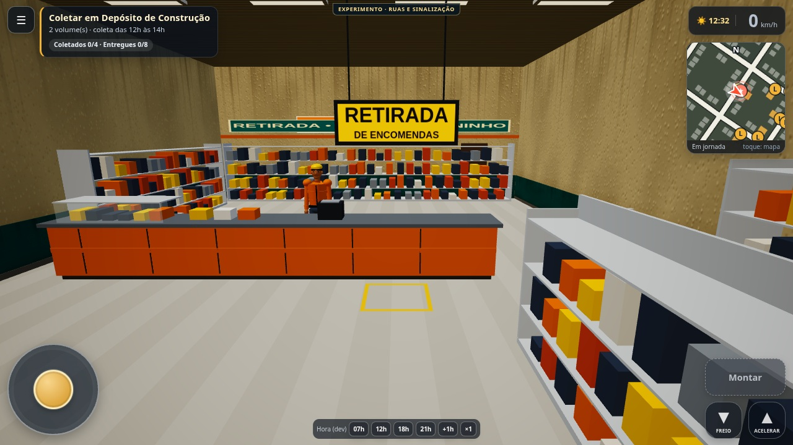

ART-001 • Capturas reais do jogo • esquerda: GFX-001 e15c8d2 • direita: ART-001 • Chromium / SwiftShader / 1280×720
Câmera de inspeção idêntica; sem retoque. Não comprova FPS em Android. Método e limitações.







